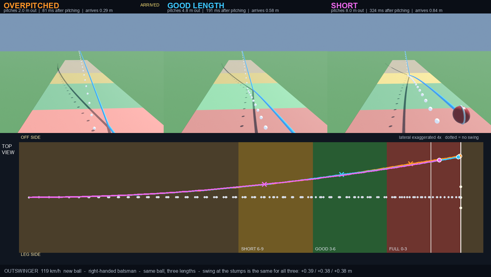
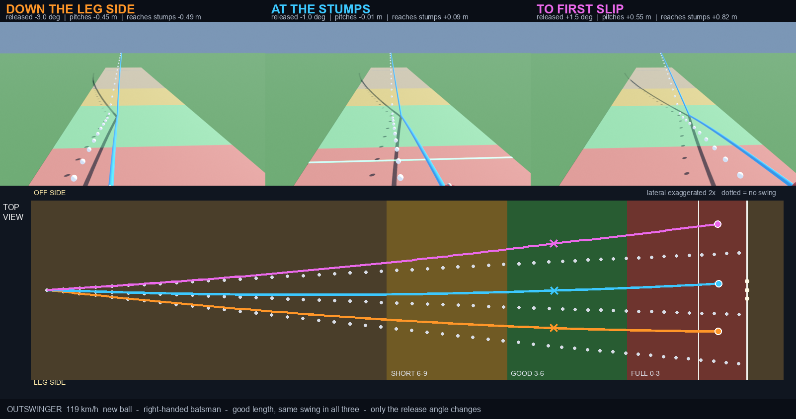
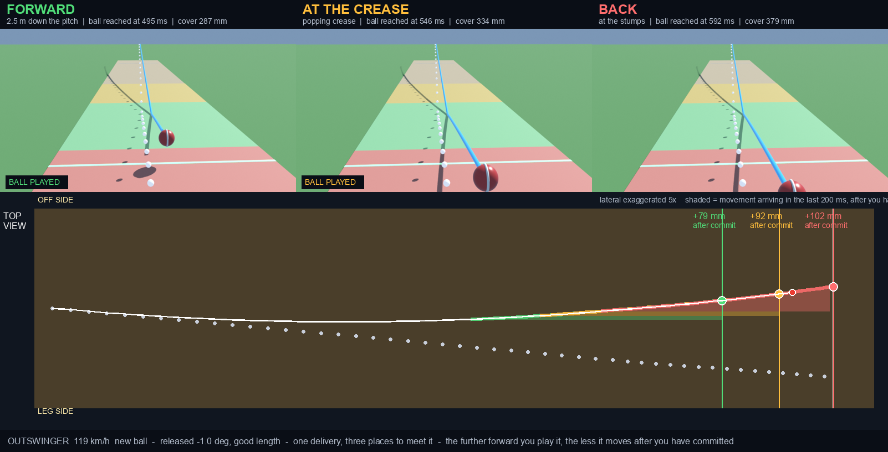

I got out to a ball that pitched on middle and hit off
stump. What could I have done differently? Let me check with some
simulations.
Ankit Naik · Thinking in Systems · August 2026
· Download PDF
The 60-second version
If you read nothing else
The finding. Length hardly changes how much an outswinger moves. Full, good or short, it swings the same 0.38 m. What length changes is how much of that movement lands after the bounce. That's probably why it looks late.
Why it matters. There's no variable to guess at. You read a starting line and add a fixed offset.
The mechanism. The sideways force is aerodynamic, set by pace and seam angle. It doesn't know where the ball bounced.
Do this. Meet it further out. Guard outside the crease, or stride to the pitch. Either one halves the movement that arrives after you've committed.
0.38 m
Sideways movement, the same at every length
96 mm
The ball that bowled me: middle to off stump, after pitching
2×
Extra late movement if you play back instead of at the pitch
So what
Don't try to guess how much it'll swing. Read where it starts, allow a
ball and a half towards off, and meet it early. The movement that beats you is the
part arriving after your bat is already committed.
Chapter 1
01 Swing is independent of length
I had a wrong assumption: I neglected the movement after the ball
pitches.
Length
Pitches from stumps
Total swing
Moves after pitching
Time to read it
Overpitched
2.0 m
+0.39 m
+74 mm
81 ms
Good length
4.8 m
+0.38 m
+165 mm
191 ms
Short
8.0 m
+0.38 m
+261 mm
324 ms

Figure 1. The short ball is airborne 304 ms against 496 ms for a
full one, and still swings the same 0.38 m. Look at the plan view: the three paths
sit almost on top of each other, and only the crosses where they pitch separate.
What length changes is when the movement happens. Off a short ball, 261 mm
of it lands after the bounce. Off a full one, 74 mm.Chapter 2
02 Read the line, not the movement
If the movement's fixed, the only thing left to read is where the ball
started. So I changed the release angle and kept everything else the same.
Released
Pitches
Reaches the stumps
Swing
−3.0°
0.45 m outside leg
0.49 m down the leg side
+0.38 m
−1.0°
on middle
off stump
+0.38 m
+1.5°
0.55 m outside off
0.82 m outside off, to slip
+0.38 m
The release angle slides the whole line sideways. The swing stays put.
The middle row is the ball that bowled me, aimed a degree inside the stumps.
So the movement is an offset you can learn or predict.

Figure 2. Three aims, three parallel curves. Each dotted line is
that same ball with the swing switched off, and every solid path sits the same
distance from its own twin.Chapter 3
03 Where to meet it
The further the ball travels, the more it has drifted. What matters is
how much drift is still to come once my bat is committed.
Meet the ball
At
Movement to cover
Arrives after you commit
At its pitch
405 ms
215 mm
51 mm
2.5 m down the pitch
495 ms
287 mm
79 mm
At the crease
546 ms
334 mm
92 mm
Back, at the stumps
592 ms
379 mm
102 mm
Standing deep buys me about 97 ms more to watch it.
It also doubles the late movement: 51 mm becomes 102 mm. A cricket ball is 71 mm in diameter, so that's the middle of the bat against an edge.

Figure 3. Each panel freezes when the ball reaches that
point. The shaded wedges are the movement still to come.
The takeaway
Judge the line. Meet it early.
I went looking for a way to predict the swing and found there's nothing to
predict. It's the same 0.38 m almost every ball. What varies is where the bowler
aimed it, and how much of the drift is still ahead of me when I commit.
Read the release and the pitch, then allow about a ball and a half to the off side.
Meet it as close to its pitch as possible: guard outside the crease, a full stride, or both. That halves the late movement.
Don't play across it. The ball is already going the other way.
Stop saying it swung late. It swung the whole way.
The numbers here come from one configuration: a new ball at
119 km/h, seam angled 20°, released 2.2 m up. Read the limits before you
trust the conclusions.
Movement off the seam at the bounce is not modelled. The ball is a smooth sphere, so the pitch gives bounce and friction but can't catch a raised seam. That effect does depend on length, and it's the one thing that could undercut Chapter 1.
Aerodynamic swing only: drag, a seam-driven side force, and a Magnus force from backspin.
Surface state is a single number, set here to a new ball. Reverse swing exists in the model but is switched off for this study.
The model only says where the ball is met, not how you get there. Taking guard outside the crease and striding to the pitch reach the same point. It says nothing about what standing out costs: being stumped, or handing the bowler a different length.
The side-force coefficients are semi-empirical: picked to reproduce the magnitudes people observe, not fitted to actual data.
How it was built
Ball flight and bounce as a Modelica model: multibody dynamics with a contact model for the pitch, solved in Wolfram System Modeler.
Aerodynamics as a custom component: drag, seam side force, Magnus lift, fed by the ball's own velocity and spin.
Trajectories exported and rendered in Blender, driven headlessly from the simulated data.
The dotted line in every figure is the same delivery with the side force set to zero.